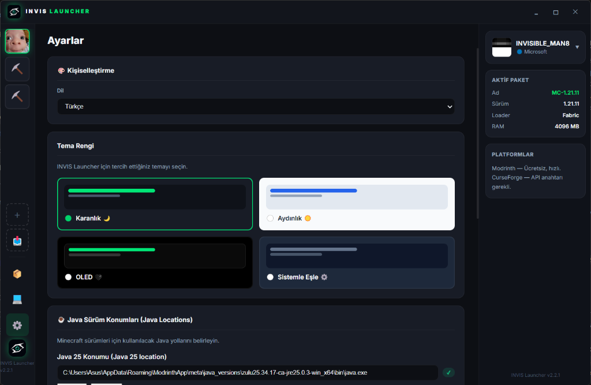
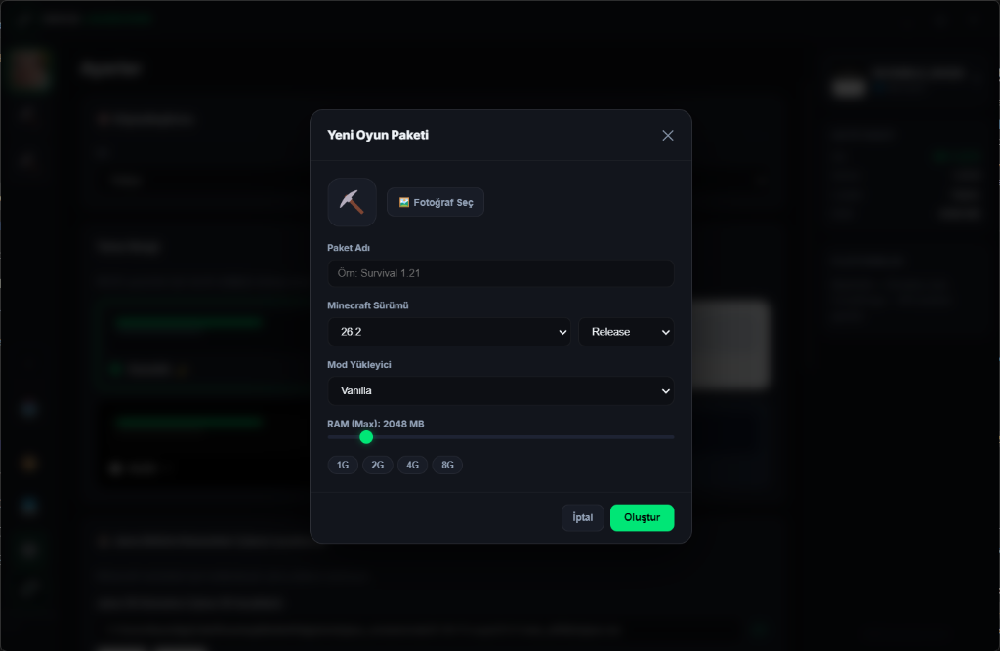

Sadeliğin ve Kontrolün Adresi: INVIS Launcher
Modrinth & CurseForge entegrasyonu, hızlı paket oluşturma ve özelleştirilebilir temalar sunan sade Minecraft istemcisi.
INVIS Launcher Özellikleri
Gereksiz karmaşıklıktan uzak, oyununuzu kolayca yönetmeniz için tasarlandı.
Hızlı & Hafif İstemci
Sisteminizi yormayan, hızlı açılan ve arka planda gereksiz kaynak tüketmeyen temiz altyapı.
Modrinth & CurseForge Entegrasyonu
Yüzlerce mod, shader ve kaynak paketine arayüz içinden kolayca erişin ve yönetin.
Özel Paket Oluşturucu
Minecraft sürümünüzü, Fabric veya Vanilla yükleyicinizi ve RAM miktarınızı tek ekrandan belirleyin.
Çeşitli Tema Seçenekleri
Karanlık, Aydınlık, OLED ve Sistemle Eşle temaları arasında dilediğiniz gibi geçiş yapın.
Sıfır Reklam
Can sıkıcı reklamlar veya gereksiz pencereler yok. Doğrudan oyununuza odaklanın.
Gelişmiş Dosya ve Java Yönetimi
Mod, shader ve dille ilgili dosyalarınızı kolayca listeleyin, aktifleştirin veya silin.
INVIS Launcher Ekran Görüntüleri
Birebir uygulama içi ekran görüntüleriyle launcher arayüzünü keşfedin.




Arayüz Galeri Slaytı
INVIS Launcher v2.3.1
GitHub Releases üzerinden en güncel Windows installer veya portable sürümünü indirin.
GitHub'dan EXE İndirSıkça Sorulan Sorular
INVIS Launcher ve indirme süreci hakkında temel sorular.